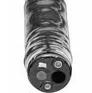
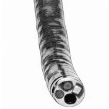
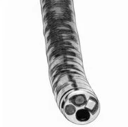
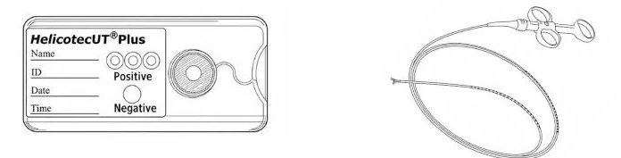
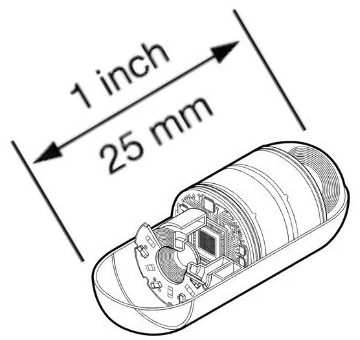

上消化道內視鏡（胃鏡）檢查同意書
說明 第 1 頁
1檢查介紹
- 檢查方式：使用直徑約 0.9 公分、長度約 110 公分的纖維內視鏡，經口腔或鼻腔進入，依序觀察下咽部、食道、胃與十二指腸前半段。
- 檢查目的：評估上腹部不適，診斷發炎、潰瘍、瘜肉、腫瘤、出血等上消化道疾病。必要時可在檢查中同時進行切片化驗、瘜肉切除、內視鏡止血、取出異物等處置。
- 自費情形：未經醫師診查，或沒有上消化道檢查的適應症而要求做胃鏡者，須自費接受本項檢查，費用為檢查費 1600 元另加耗材費用。
2檢查前請注意
- 請主動告知慢性病史（如心血管疾病、慢性肝病、慢性腎病、氣喘等）與過敏史。
- 正在服用抗血小板藥物或抗凝血劑，請主動告知，由醫師評估是否需要停藥。
- 檢查當日暫停降血糖藥物，檢查完成後再依指示服用。降血壓藥、降膽固醇藥可照常服用，不必停藥。
- 檢查前禁食至少 8 小時，檢查前 2 小時內不可喝水。
3檢查當日與檢查後
- 抵達診所後，會先服用消除胃內氣泡、減緩腸胃蠕動的藥物，接受咽喉局部麻醉後再開始檢查。
- 檢查時偶爾會發生輕微損傷，例如咽喉疼痛、因緊咬咬口器造成嘴唇破皮。如決定接受檢查，發生不可避免的損傷時，本診所無法負責後續處置費用。
- 檢查完成後醫師會解釋報告。沒有特殊情況，半小時後即可恢復進食。
- 檢查中如發現潰瘍或急性出血，或切除瘜肉時評估為高出血風險，醫師會視情況使用止血醫材：拋棄式內視鏡注射針 1500 元、內視鏡止血夾每支 1000 元。
4預約與押金
- 因排程緊湊，取消檢查或改期請於檢查日 3 天前來電。預約後多次聯繫不到，本診所有權取消當日預約。
- 健保檢查當日請務必攜帶健保卡。未帶健保卡須付門診押金 1600 元，病理切片押金 2000 元。
- 有長期服用的藥物，請帶藥袋或藥單，方便醫師確認。
胃鏡檢查費用與同意
受檢人姓名：＿＿＿＿＿＿＿＿＿＿ 病歷號碼：＿＿＿＿＿＿＿＿
5檢查費用
基本選項 三選一，請勾選



進階選項與臨床需要時使用 幽門桿菌檢測可自行勾選；止血醫材由醫師在檢查中視情況使用



同一天內，健保只給付胃鏡與大腸鏡其中一項。如要申請商業保險理賠，請先與您的保險公司確認。
6同意書
本人已詳閱上述說明，了解胃鏡檢查的必要性與可能的風險，同意接受上消化道內視鏡（胃鏡）檢查。
此致 木子澄安診所
下消化道內視鏡（大腸鏡）檢查同意書
說明 第 1 頁
1檢查介紹
- 檢查方式：使用直徑約 1.2 公分、長度約 130 公分的纖維內視鏡，由肛門進入，依序觀察直腸、乙狀結腸、降結腸、橫結腸、升結腸至盲腸。
- 檢查目的：診斷發炎、潰瘍、瘜肉、腫瘤、出血等下消化道疾病。必要時可在檢查中同時進行切片化驗、瘜肉切除、內視鏡止血、取出異物等處置。
- 自費情形：未經醫師診查，或沒有下消化道檢查的適應症而要求做大腸鏡者，須自費接受本項檢查，費用為檢查費 2500 元另加耗材費用。
2檢查前請注意
- 請主動告知慢性病史（如心血管疾病、慢性肝病、慢性腎病、氣喘等）與過敏史。
- 正在服用抗血小板藥物或抗凝血劑，請主動告知，由醫師評估是否需要停藥。
- 檢查當日暫停降血糖藥物，檢查完成後再依指示服用。降血壓藥、降膽固醇藥可照常服用，不必停藥。
- 清腸是檢查品質的關鍵。請依清腸衛教單：檢查前 2 至 3 天吃低渣飲食，檢查前一天服用清腸藥並喝足量清水，直到排出物清澈、沒有殘渣。
- 檢查當日 00:00 起只能喝水、運動飲料與清腸藥，檢查前 2 小時內不可喝水。
3檢查中與檢查後
- 大腸鏡屬於侵入性檢查，出血與穿孔的發生率約 0.1%，發生時須轉往醫院接受後續治療。
- 檢查中醫師需要充氣，才能完整觀察大腸。如有不適可隨時告訴醫師，無法忍受時也可以中止檢查。
- 檢查完成後醫師會解釋報告。沒有特殊情況，檢查後即可恢復進食。
- 檢查中如發現潰瘍或急性出血，或切除瘜肉時評估為高出血風險，醫師會視情況使用止血醫材：拋棄式內視鏡注射針 1500 元、內視鏡止血夾每支 1000 元。
4預約與押金
- 因排程緊湊，取消檢查或改期請於檢查日 3 天前來電。預約後多次聯繫不到，本診所有權取消當日預約。
- 健保檢查當日請務必攜帶健保卡。未帶健保卡須付門診押金 2500 元，病理切片押金 2000 元。
大腸鏡檢查費用與同意
受檢人姓名：＿＿＿＿＿＿＿＿＿＿ 病歷號碼：＿＿＿＿＿＿＿＿
5檢查費用
基本選項 二選一，請勾選

二氧化碳充氣
日本製造代餐
日本製造清腸藥

二氧化碳充氣
台灣製造代餐
台灣製造清腸藥
臨床需要時使用 止血醫材由醫師在檢查中視情況使用
同一天內，健保只給付胃鏡與大腸鏡其中一項。如要申請商業保險理賠，請先與您的保險公司確認。
6同意書
本人已詳閱上述說明，了解大腸鏡檢查的必要性與可能的風險，同意接受下消化道內視鏡（大腸鏡）檢查。
此致 木子澄安診所
膠囊內視鏡檢查同意書
說明 第 1 頁
1檢查介紹
- 檢查方式：吞下一顆長約 25 公釐的膠囊攝影機，膠囊隨腸道蠕動通過消化道，沿途拍攝的影像即時傳到腰帶式接收器與記錄主機，最後隨糞便排出體外。
- 適合評估的部位：主要用於觀察胃鏡與大腸鏡到達不了的小腸，屬於非侵入性檢查，不需要插管。
- 膠囊構造：外殼為生物相容性材質，內含高解析度廣角鏡頭，可自動調整拍攝頻率。
- 影像判讀：全程影像可達 50,000 至 100,000 張，醫師使用閱片工作站並搭配人工智慧輔助判讀。

2哪些人不適合做？
絕對禁忌症：不可執行
- 已知或高度懷疑腸道狹窄、瘻管，且未完成通暢性測試。
- 無法吞嚥或明顯吞嚥困難，且無法配合內視鏡輔助置入。
- 腸道阻塞或急性腸阻塞。
相對禁忌症：需醫師評估
- 心律調節器或植入式電子設備。
- 懷孕：安全性尚未完全建立，原則上避免。
- 腸道動力障礙，如胃輕癱、腸阻塞病史。
- 吞嚥困難但可藉內視鏡輔助置入：需另加費用，也有相應風險。
- 嚴重腹脹或急性腸炎期間。
3報告與健保給付
- 報告時間：醫師判讀通常在 3 至 7 個工作天內完成，部分急性出血個案可當天優先判讀。
- 報告內容：小腸黏膜狀態描述、病灶位置（以占小腸長度的比例標示）與影像截圖。
- 健保給付：本診所的膠囊內視鏡不在健保給付範圍，須自費。健保給付的適應症須事前審查，且必須在醫學中心執行，包括：
- 不明原因消化道出血，且上、下消化道內視鏡各做兩次後仍找不到出血來源。
- 克隆氏症（Crohn's disease）的診斷或追蹤輔助。
- 小腸腫瘤、遺傳性瘜肉症候群。
4膠囊排出與滯留
膠囊通常在 24 至 72 小時內隨糞便排出。超過 2 週仍未確認排出，或出現腹脹、腹痛、噁心等症狀，請立即回診確認膠囊位置。統計上膠囊滯留超過 14 天的發生率約 1%，若藥物治療反應不佳，可能需要手術或深部小腸鏡取出。
膠囊內視鏡檢查流程、費用與同意
受檢人姓名：＿＿＿＿＿＿＿＿＿＿ 病歷號碼：＿＿＿＿＿＿＿＿
5檢查前準備
- 檢查前 3 天開始吃低渣飲食。
- 檢查前一天 18:00 後不吃固體食物，可喝清澈液體（水、運動飲料）。
- 檢查前一天 19:00 開始服用清腸藥並喝 2000 mL 開水，在 2 小時內喝完。
6檢查當日流程
| 步驟 | 內容 |
|---|---|
| 報到與準備 約 30 分鐘 | 穿戴記錄設備並確認功能正常；說明注意事項，確認身上沒有磁鐵類飾品。 |
| 吞服膠囊 約 5 分鐘 | 以 250 mL 開水吞服膠囊，並搭配藥物減少氣泡。 |
| 吞服後 | 2 小時內不吃不喝，4 小時後可少量喝水，8 小時後可吃清淡食物。避免劇烈運動，也不要靠近強磁場設備（MRI、業餘無線電設備）。 |
| 日常活動 | 經醫師確認膠囊進入小腸後即可離開診所。穿戴記錄器期間避免彎腰或壓迫腹部。 |
| 歸還記錄器 約 8 至 12 小時後 | 返回診所歸還記錄器，由診所上傳影像。 |
7檢查費用與同意
如要申請商業保險理賠，請先與您的保險公司確認。
本人已詳閱上述說明，了解膠囊內視鏡檢查的必要性與可能的風險，同意接受膠囊內視鏡檢查。 此致 木子澄安診所
內視鏡輕中度鎮靜同意書
鎮靜與麻醉說明 第 1 頁
1本診所的兩種舒眠內視鏡
- 本診所提供兩種舒眠內視鏡檢查方式：「輕中度鎮靜」與「靜脈麻醉」。規劃時以病人安全為第一原則，採專業分工的雙軌制度。
- 不論選擇哪一種，負責鎮靜或麻醉的醫師都受過完整的急救與呼吸道處置訓練，能在第一時間處理鎮靜相關的風險：
輕中度鎮靜由急診專科醫師執行靜脈麻醉由麻醉專科醫師執行
- 鎮靜與麻醉的安全由專責醫師把關，執行內視鏡的醫師可以專注在檢查品質與病灶判讀。
2兩種方式怎麼選？
| 輕中度鎮靜 | 靜脈麻醉 | |
|---|---|---|
| 主要藥物 | midazolam（苯二氮平類） | propofol（丙泊酚） |
| 意識程度 | 輕度鎮靜，拍打可喚醒 | 深度鎮靜，無意識 |
| 生效時間 | 2 至 5 分鐘 | 約 1 分鐘 |
| 恢復時間 | 5 至 10 分鐘 | 約 5 分鐘 |
| 拮抗藥物 | flumazenil（可逆轉） | 無拮抗劑（自然代謝） |
| 呼吸抑制風險 | 低 | 高 |
| 舒適度 | 中度，可能有輕微感覺 | 高，過程通常沒有感覺 |
| 執行醫師 | 急診專科醫師 | 麻醉專科醫師 |
| 同意書 | 本同意書 | 另簽麻醉同意書 |
3鎮靜前後請注意
- 禁食、禁水時間，依胃鏡或大腸鏡同意書的說明。
- 需有親友陪同。完成後當天不可開車、騎車，也不要坐機車後座。
- 請穿寬鬆衣物。有光療指甲者，請事先卸除至少兩指，以便監測血氧。
- 過程中若出現躁動，為避免受傷，必要時會以約束帶做保護性約束。
鎮靜前自我評估、費用與同意
受檢人姓名：＿＿＿＿＿＿＿＿＿＿ 病歷號碼：＿＿＿＿＿＿＿＿
4自我評估由受檢人填寫，每題請勾選
| 1. 曾經接受手術麻醉 | 否 是 |
| 2. 曾有麻醉併發症（呼吸停止或其他） | 否 是 |
| 3. 曾有藥物過敏反應 | 否 是，藥名： |
| 4. 目前懷孕中 | 否 是 |
| 5. 身上有人造物品（義肢、假牙、隱形眼鏡） | 否 是 |
| 6. 有藥物依賴或酗酒 | 否 是 |
| 7. 曾患以下疾病：無 高血壓 心臟病 糖尿病 氣喘 腎臟病 肝病 甲狀腺疾病 癲癇 中風 精神疾病 其他：＿＿＿＿＿＿＿＿ | |
| 8. 正在服用以下藥物：無 降血壓藥或心臟病藥物 抗癲癇藥物 鎮靜安眠藥物 抗凝血劑或抗血小板藥物（如阿斯匹靈、保栓通） 減重口服或針劑藥物 | |
| 9. 其他疾病史或身體不適： | |
5鎮靜費用請勾選本次項目
腸胃鏡的鎮靜與麻醉不在健保給付範圍，須自費。如要申請商業保險理賠，請先與您的保險公司確認。
6同意書
本人已詳閱上述說明，了解鎮靜的必要性與可能的風險，同意接受輕中度鎮靜。 此致 木子澄安診所
內視鏡靜脈麻醉同意書
麻醉說明 第 1 頁
1本次預計的麻醉
| 檢查項目 | 胃鏡 大腸鏡 胃鏡＋大腸鏡 |
|---|---|
| 麻醉方式 | 靜脈麻醉（propofol），由麻醉專科醫師執行 |
2麻醉可能的副作用與併發症
麻醉能讓檢查順利進行，免除過程中的不適與緊張，並維持生理功能穩定。少數人仍可能出現以下狀況：
- 原本就有、或尚未發現心臟血管疾病的人，檢查中或麻醉後較容易發生急性心肌梗塞。
- 有心臟血管或腦血管疾病的人，檢查中或麻醉後較容易發生腦中風。
- 未依指示禁食、緊急處置，或腹內壓力高（例如腸阻塞、懷孕）的人，麻醉時可能嘔吐，造成吸入性肺炎。
- 特殊體質的人，麻醉可能引發惡性發燒。這是一種潛在的遺傳疾病，目前沒有適當的事前檢查可以預知。
- 對藥物特別過敏而引起的突發反應。
- 其他偶發的病變。
3麻醉前後請注意
- 麻醉前至少禁食、禁水 8 小時（特殊狀況依醫師指示）。需要服藥者請先詢問醫師，並在麻醉前至少 2 小時以少量白開水服藥。
- 需有親友陪同。完成後當天不可開車、騎車，也不要坐機車後座。
- 有光療指甲者，請事先卸除至少兩指，以便監測血氧。
4關於同意與簽署
- 麻醉同意書原則上由病人本人簽名。病人未成年或無法表達同意時，可由法定代理人、配偶、親屬或關係人簽名，並填寫與病人的關係。
- 關係人是指與病人關係特別密切的人，例如伴侶（不分性別）、同居人、摯友；或依法令、契約對病人負有保護義務的人。
- 病人不識字時，可以按指印代替簽名，並由兩位見證人在指印旁簽名。
- 檢查中如需變更麻醉方式或範圍，病人清醒時會先告知並取得同意；病人無法表達時，由上述人員代為同意。上述人員都不在場時，麻醉醫師會以病人的最大利益依專業判斷決定，但不違反病人明示或可推知的意思。
- 之後如再次接受需要麻醉的檢查或手術，需重新簽署麻醉同意書。
麻醉術前評估單
由受檢人填寫，每題請勾選
| 姓名： | 病歷號碼： |
| 性別：男 女 年齡： | 身高： 公分 體重： 公斤 |
| 預計檢查日期： 年 月 日 檢查項目：胃鏡 大腸鏡 胃鏡＋大腸鏡 | |
5過去病史
| 1. 曾經接受手術麻醉 | 無 有： |
| 2. 自己或家人曾因麻醉發生意外 | 無 有： |
| 3. 藥物或食物過敏：無 抗生素 消炎止痛藥 酒精 麻醉藥 其他： 過敏症狀： | |
| 4. 慢性病：無 高血壓 糖尿病 氣喘 心臟病 中風 腎臟病 | |
| 5. 其他疾病：無 B 型或 C 型肝炎 甲狀腺疾病 凝血異常 癲癇 心律不整 睡眠呼吸中止症 胃腸道疾病 其他： | |
| 6. 目前用藥：無 有： | |
| 7. 近兩年曾住院 | 無 有，原因： |
| 8. 生活習慣：抽菸 喝酒 嚼檳榔 打鼾 容易暈車 | |
| 9. 最近一週內感冒或發燒 | 無 有（好轉中 症狀持續） |
| 10. 目前懷孕中 | 否 是 |
6體能狀況
| 1. 能爬樓梯到三樓 | 能 不能；中途需要休息：是 否 |
| 2. 能慢走 100 公尺 | 能 不能；中途需要休息：是 否 |
| 3. 運動或勞動時胸悶不適 | 沒有 有 |
麻醉聲明與同意
病人姓名：＿＿＿＿＿＿＿＿ 出生日期：＿＿＿年＿＿月＿＿日 病歷號碼：＿＿＿＿＿＿
7醫師之聲明由麻醉醫師填寫
- 我已為病人完成術前麻醉評估。
- 我已盡量以病人能了解的方式，說明麻醉的相關資訊，特別是以下事項：
麻醉的步驟 麻醉的風險 麻醉後可能出現的症狀 其他麻醉相關資料已交給病人 - 我已給病人充足時間，詢問本次檢查有關麻醉的問題，並給予答覆：
（1）（2）（3）
8病人之聲明
- 我了解為了讓檢查順利進行，需要同時接受麻醉，以免除檢查造成的不適與恐懼。
- 麻醉醫師已向我說明，我已了解麻醉的方式與風險。
- 我已了解麻醉可能發生的副作用與併發症。
- 對於麻醉，我可以向醫師提出問題與疑慮，並已獲得說明。
基於上述聲明，我同意進行麻醉。
如果您拿到的同意書還沒有醫師之聲明，請先不要簽名。本同意書簽署完成後，一份由本診所連同病歷保存，一份交由病人收執。
痔瘡能量治療（冷凝刀）同意書
說明 第 1 頁
1治療介紹
- 治療方式：冷凝刀（HET）以溫控探頭經肛門夾住齒狀線以上的內痔組織與供應血管，用約 55 至 60°C 的低溫熱能（傳統電燒約 400°C）阻斷血流，讓痔瘡逐漸萎縮。不需要切割與縫合。
- 治療時間：過程約 15 至 20 分鐘。治療後在診所觀察 30 分鐘，沒有異狀即可回家，不需住院。
- 治療感受：治療位置在齒狀線以上，這一段痛覺神經較少，多數人只感覺輕微溫熱或脹感。
- 保留肛門組織：不切除肛門軟墊組織（anal cushions），可降低肛門狹窄與失禁的風險。

2哪些痔瘡適合？
| 適合 | 第一度與第二度內痔（出血、輕微脫垂） |
|---|---|
| 需醫師評估 | 輕微的第三度內痔 |
| 不適合 | 外痔（外痔皮膚神經豐富，不適用此方法）、嚴重的第四度脫垂內痔、急性血栓性痔瘡 |
3治療前請注意
- 冷凝刀治療前，宜先接受全大腸鏡檢查。一年內做過全大腸鏡者，可改以乙狀結腸鏡評估。
- 治療當天醫師會先以內視鏡再次評估，確認適合冷凝刀才會進行治療。
- 清腸與禁食方式，依大腸鏡同意書的說明。
- 正在服用抗血小板藥物或抗凝血劑，請主動告知，由醫師評估是否需要停藥。
4治療後可能出現的狀況
- 治療後幾天內可能有肛門脹感、輕微疼痛或排便時少量出血，通常會逐漸改善。
- 少數人可能出現延遲性出血、排尿困難或血栓性痔瘡，需要回診處理。
- 痔瘡日後仍可能復發，必要時需要再次治療。
冷凝刀治療費用與同意
受治療者姓名：＿＿＿＿＿＿＿＿＿＿ 病歷號碼：＿＿＿＿＿＿＿＿
5痔瘡的位置

- 痔瘡是肛門口靜脈叢擴張、脫垂所形成，分為齒狀線以上的內痔與以下的外痔。
- 內痔依脫垂程度分為四度。冷凝刀處理的是齒狀線以上的內痔。
6治療費用以合併大腸鏡評估、輕中度鎮靜為例
| 項目 | 內容 | 費用 |
|---|---|---|
| 大腸鏡 | 治療前評估 | 健保給付 |
| 大腸鏡自費選項 | 拋棄式檢查褲、二氧化碳充氣、日本製造代餐與清腸藥 | 1500 元 |
| 輕中度鎮靜 | 由急診專科醫師執行，另簽鎮靜同意書 | 2500 元 |
| 冷凝刀治療 | 痔瘡能量治療 | 35500 元 |
| 合計 | 39500 元 | |
- 同日加做胃鏡，或改為靜脈麻醉，會另外增加費用。
- 健保不給付冷凝刀治療（健保只給付傳統痔瘡手術與橡皮筋結紮），須全額自費。治療當天本診所會開立完整收據。
- 如要申請商業保險理賠，請先與您的保險公司確認。
7同意書
本人已詳閱上述說明，了解冷凝刀治療的方式、可能的不適與風險，同意接受痔瘡能量治療（冷凝刀）。
此致 木子澄安診所
甲狀腺細針穿刺說明與同意書
受檢人姓名：＿＿＿＿＿＿＿＿＿＿ 病歷號碼：＿＿＿＿＿＿＿＿
1檢查說明
- 檢查目的：判斷甲狀腺結節是良性或惡性。
- 檢查方式：在超音波導引下，以 21 或 23 號細針穿刺結節，抽取內容物做細胞學檢查。
- 檢查後注意：穿刺完成後需在診所停留 20 分鐘，以兩指在穿刺處加壓，確認無異樣才離開。
- 可能的併發症：較常見的是加壓不當造成局部出血。

2檢查前請告知醫師
- 服用抗凝血藥物者，檢查前應至少停用 7 天。停藥前請先與醫師確認。
- 有血小板不足、肝硬化、腎功能不佳等容易出血的疾病，請事先告知。
- 請攜帶健保卡；有長期服用的藥物，請帶藥袋或藥單。
3同意書
本人經醫師說明後，已了解甲狀腺細針穿刺的目的、方式、注意事項與可能的併發症，同意接受此項檢查。
此致 木子澄安診所